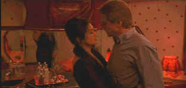

| Chinese Box/B,B |
| Trimark/1997/99/WS
1.85 |
A film that exists on
many levels, Chinese Box is a film that exists on many levels. It's a multiple love story
set in Hong Kong at a fascinating point in the former British colony’s history. In attempting to
understand the profound influences of the Chinese takeover from Britain on the small Asian Island
commercial center, director Wayne Wang explores the streets, the rhythms and the people of the city
with the hunger of a loaded video camera. It's well worth seeing.
Jeremy Irons plays John, a veteran reporter covering the Hong Kong scene.
Irons discovers that he is suffering from some form of cancer and begins counting his days as the
countdown for the Chinese takeover of the Crown colony is in full swing. He takes tot he streets
with a digital video camera, looking through a fresh lens at Hong Kong. John must work out his
relationship with the beautiful Chinese woman, Vivien, come to grips with his mistakes and move
along the road of reality. Along the way, he meets Jean, a disfigured street woman, who
stands in for one side of the Chine/Britain relationship. The friendship between John and his
photographer Jim adds some humor to a mostly heavy picture. as Jim strums on the guitar, hangs out
with John during his crisis, providing a fresh prospective.
Chinese Box may not be a stretch for Jeremy Irons, but it’s
the best and most subtle I remember him in years. The complexity of character is very internal.
Gong Li is passively beautiful. I wished she had more to do, while Maggie Cheung is splendid She
plays Jean with absolutely no fear. Ruben Blades adds a entertaining presence as Jim.
Wang’s peripatetic camera captures a veritable feast of colors on the
Hong Kong streets. Attacking the senses in naturalistic way, one can almost smell the aromas that
help define the back alleys of the exotic Island State. Chinese Box is a fascinating slice
of cultural pie baked by an enthusiastic chef.
 |
| Irons can't resist Gong Li. Who can? ©Trimark |
The combination of video and film can add up to
rough going for a DVD transfer. Chinese Box contains no ugly artifact surprises. Clean
images with good detail reveal the interesting point of view of director Wayne Wang. The colors of
the market come to life and the delicate interiors retain for warm style. The Dolby Digital 2.0
Surround sound is not overly aggressive. It still manages to capture the exotic nature of the
streets with enveloping detail. The music is and dialogue are clean and clear.
|
|
|
|

Selections from the Feature Archive
include articles on Akira Kurosawa, Frank
Darabont, Blonde Bimbos, Hollywood Street Gangs, or Vietnam: The
Hollywood Pariah, and many more....

What actor would you vote whose screen persona best exemplified the fabric of the president of the
United States? Check act Acting Presidential for a look at the many actors
who have coveted The Oval Office.
The Exquisite Muse of Zhang Yimou

The powerful image-making of Zhang Yimou has revealed itself in
virtually every film he has made. Coupled with his remarkable collaboration with actress Gong Li,
Zhang's has built a stunning body of work Click the image to read all about it.

 Have you visited Home Theater
Talk lately? One of the friendliest places on the Net for Home Theater and DVD discussion, you
can get help for installation problems or simply share your opinions with other Vidiots. Have you visited Home Theater
Talk lately? One of the friendliest places on the Net for Home Theater and DVD discussion, you
can get help for installation problems or simply share your opinions with other Vidiots.

A hallmark of Film Threat Magazine is irreverence. The transition from print to the Internet leaves
the acid base in tact. Humorous criticism with a vengeance.

Cinemedia is
the largest film and media directory with over 25,000 links.
 ETEKNet is the web's only 24-hour, totally FREE source for all your home theater,
DVD, Dreamcast, PC, and Networking tech support needs! ETEKNet is the web's only 24-hour, totally FREE source for all your home theater,
DVD, Dreamcast, PC, and Networking tech support needs!
|